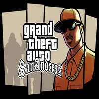
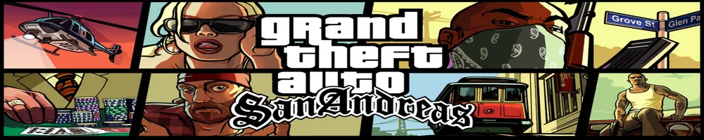
Grand Theft Auto: San Andreas
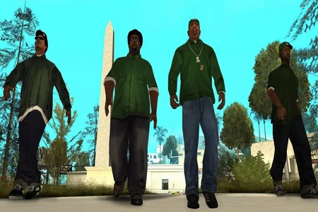
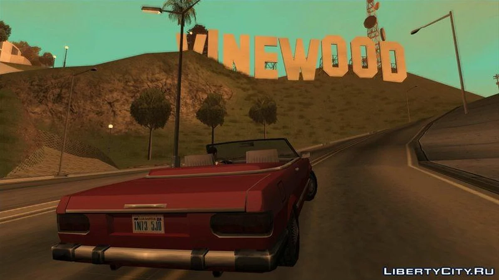
Descripción
- Hace cinco años Carl Johnson huyó de los rigores de la vida en
LosSantos, San Andreas,una ciudad
destrozada por las bandas, las drogas y la corrupción en la que
las estrellas de cine y los millonarios
hacen lo posible por
evitar a los traficantes y a los pandilleros.
Estamos a principios
de los noventa y Carl debe regresar.
Su madre fueasesinada, su
familia se rompe
en pedazos y sus amigos de la infancia van por el mal camino.
Al regresar a su barrio, un par de policías corruptos lo acusan de
homicidio.
CJ se ve arrastrado a un viaje que lo llevará a cruzar
todo San Andreas para salvar a su familia y obtener el control de las
calles.
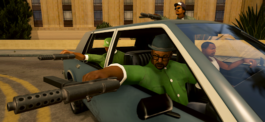
Historia
- Grand Theft Auto: San Andreas narra la historia de Carl «CJ» Johnson,
quien decide volver a Los Santos
después de permanecer viviendo en Liberty City durante cinco años
para asistir al funeral de su madre,
Beverly, quien ha sido
asesinada en un tiroteo.
Apenas llega a la ciudad, Carl es
interceptado por los oficiales de policía del C.R.A.S.H.
Frank
Tenpenny, Edward «Eddie» Pulaski y su más reciente incorporación
el oficial Jimmy Hernández, que lo amenazan con incriminarlo en el
asesinato de un agente de policía,
a menos que éste les ayude en
sus operaciones ilegales.
Carl vuelve con sus aliados y amigos en
su antigua pandilla, los Grove Street Families,
trabajando junto
con su hermano Sweet, líder de la banda y de quien perdió todo
reconocimiento al haberse ido; y con sus compañeros
Ryder y Big
Smoke, para devolver a Grove como pandilla
predominante en la
ciudad (puesto que ahora las bandas más fuertes son los Ballas y Los
Santos Vagos) y reducir
la influencia del crack entre miembros de
la banda.
Poco antes de una batalla de pandillas entre Grove
Street y Ballas, banda archienemiga, CJ recibe una llamada del novio de
su
hermana Kendl, César Vialpando, un líder de la pandilla Varrios
Los Aztecas la cual rivaliza con la pandilla Los Santos Vagos.
Tras pedirle que se encuentren, César muestra a Carl el vehículo
implicado en el asesinato de su madre
siendo escoltado para
sorpresa de CJ por Big Smoke, Ryder, unos Ballas y Tenpenny.
CJ se
da cuenta de que la batalla es una emboscada y decide ir a por su
hermano, quien estaba en pleno enfrentamiento.
No obstante, llega
demasiado tarde, pues Sweet es herido e internado en el hospital de una
prisión.
Carl es arrestado, sin embargo, el C.R.A.S.H. logra
custodiarlo y lo liberan en Angel Pine con más órdenes de asesinato para
su conveniencia.
Mientras tanto, Ryder y Big Smoke, ahora aliados
con los Ballas e inundando
con drogas a la ciudad, toman control
absoluto de Los Santos en lo que a pandillas se refiere.
- Durante su estadía en los condados rurales de San Andreas, Carl hace
diversos trabajos con la prima del también exiliado
César, Catalina; así como «The Truth», un anciano hippie
agricultor de marihuana. Asimismo, durante unas carreras
ilegales
conoce al ciego Wu Zi «Woozie» Mu, el cual es el líder de las triadas
que operan en San Fierro y gana el título
de propiedad de un
garaje ubicado en Doherty, en dicha ciudad
perteneciente a
Catalina; mientras ésta decide irse a Liberty City con Claude Speed.
Mientras avanza la trama, Carl se traslada San Fierro y trabaja
para convertir
el garaje en un taller mecánico contratando a los
mecánicos Dwaine y Jethro, y al experto en electrónica Zero.
También ayuda a Woozie a defenderse de la pandilla vietnamita Da
Nang Boys ganándose su amistad y respeto mutuo, además de realizar
trabajos para Tenpenny. CJ se introduce en el Loco Syndicate, una
banda
asociada a Smoke y Ryder en su negocio de drogas, para
eventualmente
asesinar a éste último y a los líderes de la
organización, Mike Toreno, T-Bone Méndez y Jizzy B.
- Posteriormente, Carl es contactado por un hombre
misterioso en el desierto que resulta ser Mike Toreno, quien se
revela como
un agente secreto del gobierno y se compromete a
asegurar la liberación de Sweet de la cárcel a cambio de la ayuda de CJ.
Más tarde, Carl es invitado por Woozie para asociarle al casino
The Four Dragons, en Las Venturas.
En este punto comienzan a
planear un robo al casino Caligula, controlado por las familias
Sindacco, Forelli y Leone.
Entretanto, Carl conoce y entabla
amistad con el gerente de Caligula Ken Rosenberg, quien está bajo
presión del hampa que controla el lugar.
- Después de la excesiva presión de las otras dos familias, el jefe
mafioso Salvatore Leone llega a Las Venturas, se deshace de
las familias Sindacco y Forelli con ayuda de Carl y toma el
control
absoluto del establecimiento. Posterior a esto, y tras
haberlo
planificado, Carl y Woozie llevan a cabo su robo,
sustrayendo
millones de dólares del casino. Un enfurecido
Salvatore
llama a CJ después del atraco, amenazándolo de muerte.
Johnson solo se limita a burlarse de Leone, para luego
colgarle.
Durante esto, Tenpenny y Pulaski, ahora bajo acusación, intentan
asesinar a Carl, pero éste se las arregla para acabar con Eddie
después de que asesinara a Hernández, quien había
resultado ser un
soplón, mientras Frank escapa.CJ también salva al rapero Madd Dogg de
intentar
suicidarse tras una serie de desafortunados eventos en
los cuales
Johnson fue el responsable, esto, sin que Dogg lo
supiese; convirtiéndose en su nuevo
representante y
restableciéndose en Los Santos. Poco después de que Carl hace un último
trabajo para Toreno, Sweet es finalmente puesto en libertad y CJ
accede a ayudarlo una vez más a restaurar Grove Street.
- Tenpenny va a juicio, pero se retiran los cargos por falta de pruebas,
posiblemente
gracias a todos los trabajos que Johnson hizo correctamente a
orden de éste.
La liberación de Frank genera ira y conmoción, lo
que provoca disturbios en todo Los Santos.
Mientras tanto, César
también ha vuelto a la ciudad y pide a CJ que le ayude a restablecer a
los Varrios los Aztecas,
puesto que los Santos Vagos se han
apoderado de la zona.
Posteriormente y gracias a que han
recuperado buena parte de los territorios, Sweetlocaliza a Big Smoke,
quien
vive en un «palacio de crack», un edificio de varios pisos
fuertemente
fortificado en Los Santos. Carl, pues, entra acabando
con todas las defensas de la fortificación y mata a
Smoke en un
tiroteo, solo para ser confrontado por Tenpenny, quien
roba el
dinero de las drogas de Smoke, provoca un incendio en el palacio y
escapa en un camión de bomberos.
Luego de escapar del edificio,
los hermanos Johnson persiguen a Frank por las calles de la ciudad
hasta que, finalmente, éste pierde el control y cae por el puente
de Ganton, aterrizando en la entrada de Grove Street.
Tenpenny
logra arrastrarse libre de los restos del accidente, antes de
desplomarse y morir.
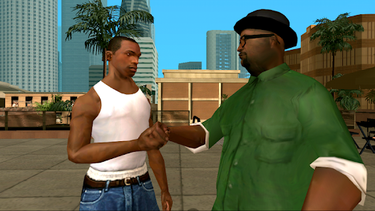
Game Play
Trucos PC
-Trucos de vehículos para GTA San Andreas Aquí tienes los trucos de 'GTA
San Andreas' de vehículos.
Helicópteros, coches,tanques y formas de desplazarte
TRUCO CÓDIGO
Jetpack ROCKETMAN
Tanque AIWPRTON
Hydra JUMPJET
Helicóptero OHDUDE
Deportivo
1 PDNEJOH
Deportivo
2 CQZIJMB
Carrito de
golf RZHSUEW
Bulldozer EEGCYXT
Monster
Truck AGBDLCID
Quad AKJJYGLC
Coche de carreras
1 VROCKPOKEY
Coche de carreras
2 VPJTQWV
Avioneta FLYINGTOSTUNTv
Limusina KRIJEBR
Camión AMOMHRE
Camión de la
basura UBHYZHQ
Coche
VIP CELEBRITYSTATUS
Hovercraft KGGGDKP
Todos los coches con
turbo COXEFGU
Coches
voladores RIPAZHA
Coches
indestructibles JCNRUAD
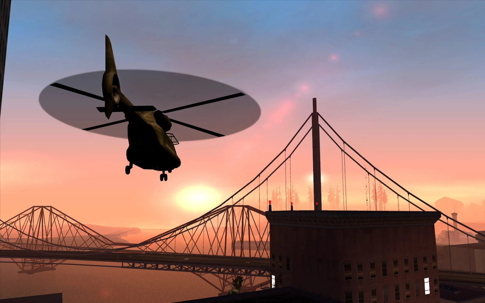
-Trucos San AndreasTrucos de dinero y salud Aquí tienes los trucos para
conseguir dinero
infinito y no tener que volver a preocuparte por temas como la
salud, la resistencia o el oxígeno al bucear.
TRUCO CÓDIGO
Dinero
infinito HESOYAM
Salud
infinita BAGUVIX
Resistencia
infinita VKYPQCF
Adrenalina
infinita MUNASEF
Oxígeno
infinito CVWKXAM
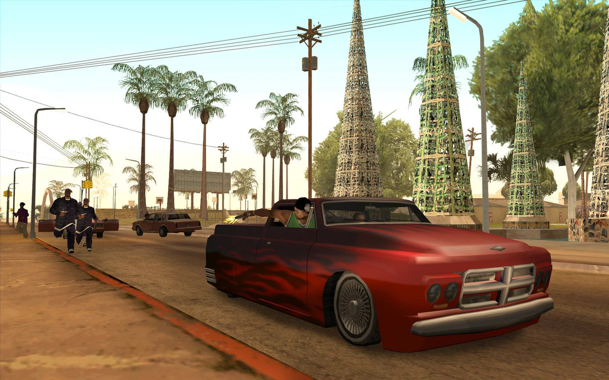
-Trucos de armas y munición
Si quieres conseguir los mejores packs de armas para luchar en
'GTA San Andreas',estos son los trucos que tienes que utilizar.
TRUCO CÓDIGO
Pack de armas
1 KJKSZPJ
Pack de armas
2 LXGIWYL
Pack de armas
3 UZUMYMW
Munición
infinita WANRLTW
Disparos siempre a la
cabeza NCSGDAG
Apuntado automático al
conducir OUIQDMW
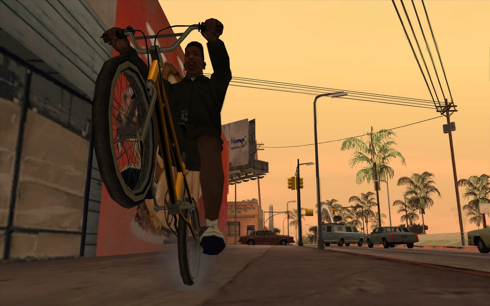
-Trucos San Andreas
Trucos de habilidades y poderes especiales Desde pegar super
puñetazos a incrementar el salto.
Todos los trucos que mejorarán
tus habilidades o te darán objetos muy especiales.
TRUCO CÓDIGO
Paracaídas AIYPWZQP
Suicidio SZCMAWO
Super
puñetazos IAVENJQ
Super
músculos JYSDSOD
Super
saltos JHJOECW
Super saltos
BMX KANGAROO
Super
respetonbsp; WORSHIPME
Super
gordo BTCDBCB
Super
delgado KVGYZQK
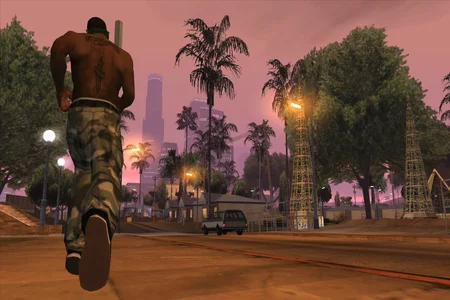
Trucos de policía y ciudad
Ya sea para que la policía deje de perseguirte, o para hacer que
la ciudad se vuelva
completamente loca o incluso cambiar el clima,
aquí tienes los trucos
ideales para hacer tu paseo por 'GTA San
Andreas' más divertido.
TRUCO CÓDIGO
Estrellas al máximo BRINGITON
Estrellas al mínimo EASNAEB
Subir dos estrellas OSRBLHH
La policía no te persigue AEZAKMI
Todos los coches explotan CPKTNWT
Los coches flotan BSXSGGC
Coches invisibles XICWMD
Payasos por todos lados PRIEBJ
Los peatones son Elvis ASBHGRB
Peatones locos AJLOJYQY
Reclutar peatones ZSOXFSQ
Los peatones son pandilleros MROEMZH
Los peatones son tus pandilleros ONLYHOMIESALLOWED
Modo caos IOJUFZN
Tormenta de arena CWJXUOC
Tormenta de rayos MGHXYRM
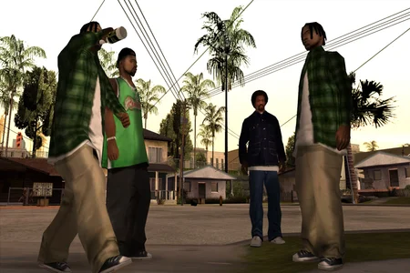
Videos
Links de Descarga
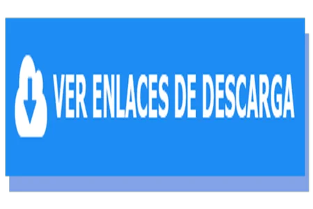